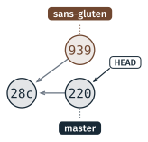
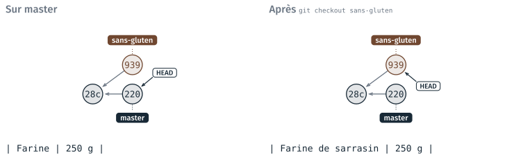
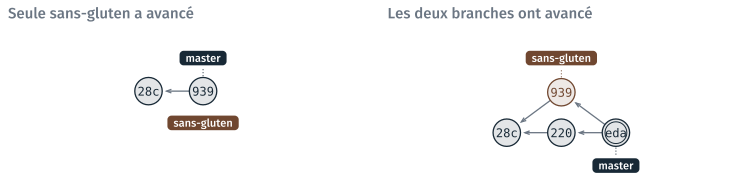
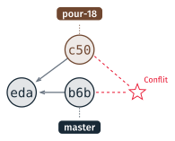
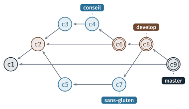

Branches, fusion et conflits#
Cette partie présente les branches, qui font évoluer une variante du projet sans toucher à la version principale, puis la fusion, qui réunit deux branches, et le conflit, quand deux branches ont modifié la même ligne. Elle se termine par l’organisation des branches quand on travaille à plusieurs. Les exemples sont ceux des étapes 5 et 6 du TD 2d ; il est présenté en fin de page.
Les branches#
Une branche est un nom posé sur un commit. Elle avance d’un commit à chaque commit fait sur elle. HEAD désigne la branche courante.

Deux branches partent de 28c : master a reçu le conseil (220),
sans-gluten a reçu la farine de sarrasin (939). HEAD est sur master.#
Une branche fait évoluer une variante sans toucher à la version
principale : ici, une recette sans gluten, pendant que master reçoit un
conseil de conservation.
Commande |
Ce qu’elle fait |
|---|---|
|
liste les branches, et marque d’une étoile la branche courante |
|
crée une branche à partir du commit courant, et s’y place |
|
se place sur une branche |
$ git checkout -b sans-gluten
Basculement sur la nouvelle branche 'sans-gluten'
La branche créée par git init s’appelle master sur les postes
(git 2.43) ; GitHub nomme la sienne main. Git Bash affiche la branche
courante à la fin de l’invite, entre parenthèses : ~/…/travail (sans-gluten).
Note
git switch <branche> fait la même chose que git checkout <branche> pour
les branches. Les cours 2, 3 et 4 emploient git checkout.
Changer de branche change les fichiers#
git checkout remplace les fichiers du dossier par ceux du dernier commit
de la branche choisie.

La ligne de la farine dans recette.md, ouvert dans VS Code, selon la
branche courante.#
La variante reste enregistrée sur sans-gluten quand on revient sur
master. Les fichiers non suivis ou ignorés, comme recette.html, ne
changent pas.
Avertissement
Avant de changer de branche, enregistrer ses modifications par un commit,
ou les annuler par git restore. Si une modification non enregistrée devait
être écrasée, git checkout ne change pas de branche et affiche un message
d’erreur.
Fusionner : git merge#
git merge <branche> apporte dans la branche courante les commits de
l’autre branche. La fusion se lance donc depuis la branche qui reçoit.

Les deux cas d’une fusion.#
Deux cas se présentent :
seule l’autre branche a avancé : git déplace le nom de la branche courante jusqu’au dernier commit de l’autre, sans créer de commit. Cette opération s’appelle une avance rapide, en anglais fast-forward ;
les deux branches ont avancé : git crée un commit de fusion, qui a deux parents, le dernier commit de chaque branche.
Au TD 2d, master a reçu le conseil et sans-gluten la farine de
sarrasin. La fusion crée le commit edae9b6 :
$ git checkout master
$ git merge sans-gluten -m "Fusionne la variante sans gluten"
Fusion automatique de recette.md
Merge made by the 'ort' strategy.
recette.md | 2 +-
1 file changed, 1 insertion(+), 1 deletion(-)
Le fichier fusionné a la farine de sarrasin et le conseil, parce que les deux modifications portent sur des lignes différentes.
Note
Sans -m, git merge ouvre l’éditeur vim pour le message du commit de
fusion. Échap, puis :wq et Entrée, gardent le message proposé.
Un conflit de fusion#
Quand deux branches ont modifié la même ligne de deux façons différentes, git ne peut pas choisir entre elles. La fusion s’arrête sur un conflit, et git écrit les deux versions dans le fichier.

La fusion de pour-18 dans master s’arrête sur un conflit.#
À l’étape 6 du TD 2d, la troisième ligne de recette.md est modifiée des
deux côtés depuis eda :
Commit |
La troisième ligne de |
|---|---|
|
|
|
|
|
|
pour-18 a changé le nombre de crêpes, master le temps de repos.
$ git merge pour-18
Fusion automatique de recette.md
CONFLIT (contenu) : Conflit de fusion dans recette.md
La fusion automatique a échoué ; réglez les conflits et validez le résultat.
Le début de recette.md est alors :
# Crêpes
<<<<<<< HEAD
*Pour 12 crêpes — 10 minutes de préparation, 2 heures de repos.*
=======
*Pour 18 crêpes — 10 minutes de préparation, 1 heure de repos.*
>>>>>>> pour-18
Entre
<<<<<<< HEADet=======: la ligne de la branche courante,master.Entre
=======et>>>>>>> pour-18: celle de la branche fusionnée.
Avertissement
Les marqueurs sont des lignes de texte ordinaires. Laissés dans un fichier
Python, ils provoquent une SyntaxError.
Résoudre un conflit#
Écrire la ligne voulue à la place des deux versions et des marqueurs. Ici, la bonne ligne prend un morceau de chacune :
*Pour 18 crêpes — 10 minutes de préparation, 2 heures de repos.*Vérifier qu’il ne reste aucun marqueur :
Ctrl+Fdans VS Code, chercher<<<<.git addpuisgit committerminent la fusion.
$ git add recette.md
$ git status
Sur la branche master
Tous les conflits sont réglés mais la fusion n'est pas terminée.
(utilisez "git commit" pour terminer la fusion)
Modifications qui seront validées :
modifié : recette.md
$ git commit -m "Fusionne la version pour 18 crêpes"
[master e87b68f] Fusionne la version pour 18 crêpes
VS Code affiche au-dessus du conflit « Accept Current Change », « Accept Incoming Change » et « Accept Both Changes ». Ici, aucune ne convient.
Note
git merge --abort abandonne une fusion en conflit, et rend l’état d’avant
le git merge. Pendant la fusion, Git Bash affiche (master|MERGING) à la
fin de l’invite.
L’organisation des branches à plusieurs#
À plusieurs, chacun travaille dans sa copie du dépôt, et les branches suivent une organisation connue de toute l’équipe. La plus répandue, appelée git flow, sépare trois sortes de branches.

Alice fait le conseil, Bruno la variante sans gluten. c6 et c8
fusionnent les tâches dans develop ; c9 porte la version terminée dans
master.#
master(oumain) ne reçoit que les versions terminées, celles qui peuvent être distribuées.developréunit le travail en cours. Elle contient toujours une version qui fonctionne, et on n’y travaille pas directement : elle ne reçoit que des fusions.Une branche par tâche part de
develop. On y travaille, puis elle est fusionnée dansdevelopquand la tâche est terminée. Sidevelopa changé entre-temps, on la fusionne dans la branche de tâche, pour travailler sur un état à jour.
Note
Le module pratique une forme réduite de cette organisation : une branche
par tâche, fusionnée dans master par une pull request sur la forge
(cours 6 et projet 7), sans branche develop. Le projet 7 pose un tag sur
la version rendue.
TD de la partie#
TD 2d — Un dépôt git pour la recette, 40 minutes. Les étapes 5 et 6 appliquent cette page : une branche fusionnée, puis un conflit résolu ; le graphe du dépôt se dessine sur papier avant d’être comparé à
git log --oneline --graph --all --decorate. L’étape 7, pour ceux qui ont fini, copie le dépôt pargit cloneet fait passer un commit d’une copie à l’autre pargit pull.
Pour s’entraîner à git après la séance, des jeux et des exercices sont réunis dans S’entraîner : jeux et exercices, dont Learn Git Branching, en français.
Les TD des autres parties sont dans Travaux dirigés de la séance 2, version 2.